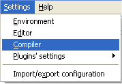
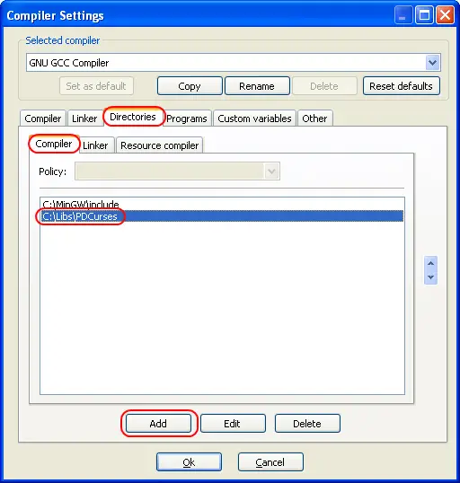
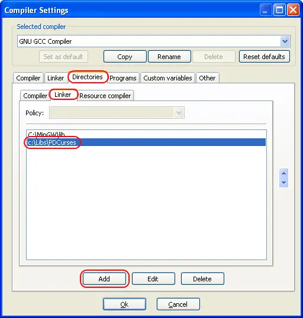
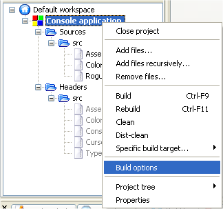
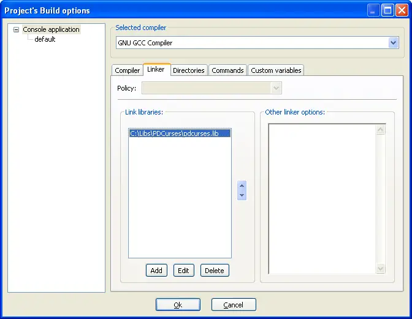

A.3 — Utiliser des bibliothèques avec Code::Blocks
Pour récapituler la procédure nécessaire à l'utilisation d'une bibliothèque :
Une fois par bibliothèque :
- Acquérir la bibliothèque. Téléchargez-la depuis le site web ou via un gestionnaire de paquets.
- Installer la bibliothèque. Décompressez-la dans un répertoire ou installez-la via un gestionnaire de paquets.
- Indiquer au compilateur où chercher le ou les fichiers d'en-tête (header) de la bibliothèque.
- Indiquer à l'éditeur de liens (linker) où chercher le ou les fichiers de la bibliothèque (s'il y en a).
Une fois par projet :
- Indiquer à l'éditeur de liens quels fichiers de bibliothèque statique ou d'importation lier (s'il y en a).
-
include le ou les fichiers d'en-tête de la bibliothèque dans votre programme.
- S'assurer que le programme sait où trouver les bibliothèques dynamiques utilisées.
Étapes 1 et 2 -- Acquérir et installer la bibliothèque
Téléchargez et installez la bibliothèque sur votre disque dur. Consultez le tutoriel sur les bibliothèques statiques et dynamiques pour plus d'informations sur cette étape.
Étapes 3 et 4 -- Indiquer au compilateur où trouver les en-têtes et les fichiers de bibliothèque
Nous allons procéder de manière globale afin que la bibliothèque soit disponible pour tous nos projets. Par conséquent, ces étapes ne doivent être effectuées qu'une seule fois par bibliothèque.
A) Ouvrez le menu « Settings » (Paramètres) et choisissez « Compiler » (Compilateur).

B) Cliquez sur l'onglet « Directories » (Répertoires). L'onglet du compilateur sera déjà sélectionné pour vous.
C) Appuyez sur le bouton « Add » (Ajouter) et ajoutez le chemin vers les fichiers .h de la bibliothèque. Si vous utilisez Linux et avez installé la bibliothèque via un gestionnaire de paquets, vérifiez que /usr/include figure bien dans cette liste.

D) Cliquez sur l'onglet « Linker » (Éditeur de liens). Appuyez sur le bouton « Add » (Ajouter) et ajoutez le chemin vers les fichiers .lib de la bibliothèque (s'il y en a). Si vous utilisez Linux et avez installé la bibliothèque via un gestionnaire de paquets, vérifiez que /usr/lib figure bien dans cette liste.

E) Appuyez sur le bouton « OK ».
Étape 5 -- Indiquer à l'éditeur de liens quelles bibliothèques votre programme utilise
Pour l'étape 5, nous devons ajouter les fichiers de bibliothèque à notre projet (s'il y en a -- sinon, vous pouvez passer cette étape). Nous le faisons projet par projet.
A) Faites un clic droit sur le nom du projet en gras sous l'espace de travail par défaut (probablement « Console application », sauf si vous l'avez modifié). Choisissez « Build options » (Options de compilation) dans le menu.

B) Cliquez sur l'onglet « Linker » (Éditeur de liens). Dans la fenêtre « Link libraries » (Bibliothèques à lier), appuyez sur le bouton « Add » (Ajouter) et ajoutez la bibliothèque que vous souhaitez utiliser dans votre projet.

C) Appuyez sur le bouton « OK ».
Étapes 6 et 7 -- #include les fichiers d'en-tête et s'assurer que le projet trouve les DLL
Il vous suffit d'#include le ou les fichiers d'en-tête de la bibliothèque dans votre projet.
Consultez le tutoriel A.1 -- Bibliothèques statiques et dynamiques pour plus d'informations sur l'étape 7.
Source originale : https://www.learncpp.com/cpp-tutorial/a3-using-libraries-with-codeblocks/